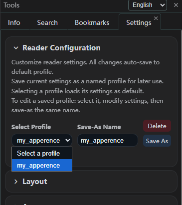

Reading Profiles
A complete set of reading settings is one profile. Keep several for different situations and switch whenever you like.
The default profile
- Every change is saved automatically into a profile named
default. defaultcannot be deleted.
Save As
- Adjust the settings you want.
- In the Reader Configuration section, enter a name and click Save As.
- Those settings become a separate profile.
If the name already exists, you are asked whether to overwrite it.
Switching and deleting
- Pick a profile from the dropdown and its settings apply immediately.
- Deleting a profile asks for confirmation; it cannot be undone.
- To change a saved profile: select it, adjust the settings, then save it again under the same name.

Typical uses
- One for daytime reading (light background, larger text) and one for night (dark, wider line spacing).
- One with the width you like for dual-column bilingual translation.